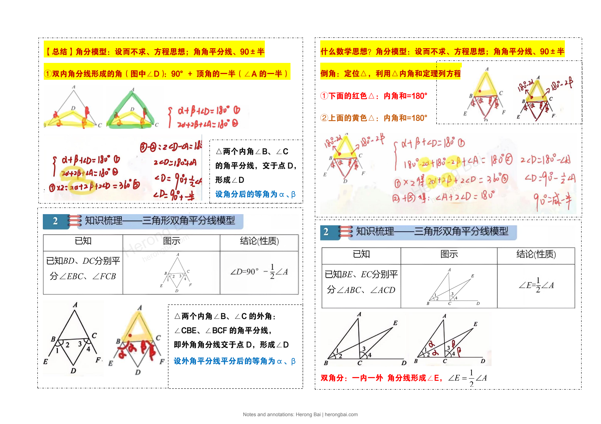

ORIGINAL LEARNING NOTES
Geometry Models & the Three Princesses
高分模型+三公主
6 pages · Chinese original · Herong Bai
The complete notes, retaining the original layout, colors and diagrams, with an author watermark added.
Page 1 / 6

Choose a page above. On a phone, use pinch-to-zoom to read the details.
This page could not be loaded. Please try again.